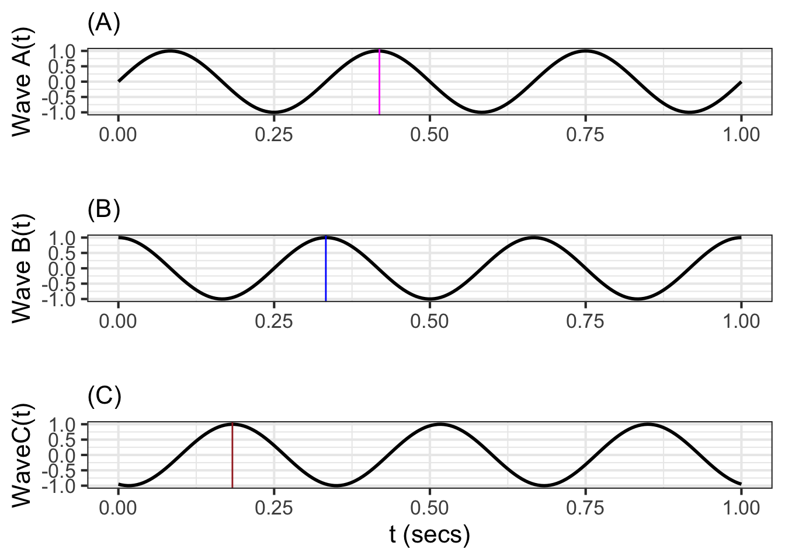
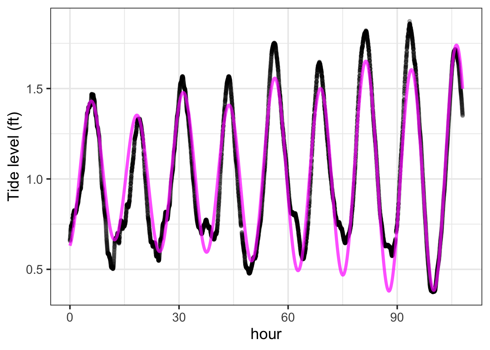

37 Functions as vectors
Note: This chapter revisits ideas of linear combinations and orthogonality in the context of functions* rather than numerical vectors.
Starting with Chapter 29, we have been working with the dot product, an operation that combines two vectors to produce a scalar. \[\vec{b}\bullet\vec{a} \equiv \left[\begin{array}{c}b_1\\b_2\\\vdots\\b_n\end{array}\right] \bullet \left[\begin{array}{c}a_1\\a_2\\\vdots\\a_n\end{array}\right] \equiv b_1 a_1 + b_2 a_2 + \cdots b_n a_n\] The dot product enables us to use arithmetic to calculate geometric properties of vectors, even in high dimensional spaces that are out of reach of a ruler or protractor. For instance
- length: \(\|\vec{a}\| = \sqrt{\strut\vec{a}\bullet\vec{a}}\)
- included angle: \[\cos(\theta_{ab}) = \left[\vec{a}\bullet\vec{b}\right] / \left[\sqrt{\strut \strut\vec{a}\bullet\vec{a}}\sqrt{\strut \strut\vec{b}\bullet\vec{b}}\right]\]
- projection onto \(\vec{a}\): \[\text{model vector:}\ \ \hat{b} = \left[\vec{b} \bullet \vec{a}\right] \,\vec{a} / {\len{a}^2} = \left[\vec{b} \bullet \vec{a} {\LARGE/} \vec{a} \bullet \vec{a}\right]\ \vec{a}.\]
We used such operations to solve the target problem: finding the best approximation of a vector \(\vec{b}\) as a linear combination of a set of vectors in a matrix \(\mathit{A}\).
As early as Block 1, we constructed functions as a linear combination of other functions, for example: \[g(t) \equiv A + B \sin\left(\frac{2 \pi}{P} t\right)\] where \(A\) is the scalar multiplier for the function \(\text{one}(t) \equiv 1\) and \(B\) the scalar multiplier for the sinusoid of period \(P\).
We will revisit the idea of linear combinations of functions using our new tools of length, included angle, and projection. To do this, we need to have a definition of the dot product suitable for application to functions.
37.1 Dot product for functions
Given two functions, \(f(t)\) and \(g(t)\) defined over some domain \(D\), we will compute the dot product of the functions as a sum of the product of the two functions, that is: \[f(t) \bullet g(t) \equiv \int_{D} f(t)\,g(t)\,dt\ .\]
The left panel of Figure 37.1 shows the functions \(f(t) \equiv t^2\) and \(\color{magenta}{\widehat{f(t)} \equiv 1/3}\) on the domain. The center panel shows the residual function, that is \(f(t) - \widehat{f(t)}\). The right panel gives the square of the length of the residual function, which is \(\int_{-1}^1 \left[f(t) - \widehat{f(t)}\right]^{1/2}\, dt\) as indicated by the area shaded in blue.
Application area 37.1 Sinusoids and sounds
The table links to audio files recorded by a human speaker voicing various vowels. Play the sounds to convince yourself that they really are the vowels listed. (It may help to use the controls to slow down the playback.)
Vowel | Player
------|-------
"o" as in "stone" | <audio controls><source src = "https://linguistics.ucla.edu/people/hayes/103/Charts/VChart/o.wav" type = "audio/wav"></audio>
"e" as in "eel" | <audio controls><source src = "https://linguistics.ucla.edu/people/hayes/103/Charts/VChart/y.wav" type = "audio/wav"></audio>As you may know, the physical stimuli involved in sound are rapid oscillations in air pressure. Our standard model for oscillations is the sinusoid function, which is parameterized by its period and its amplitude. The period of a sound oscillation is short: between 0.3 and 10 milliseconds. The amplitude is small. To get a sense for how small, consider the change in air pressure when you take an elevator up 10 stories in a building. The pressure amplitude of sound at a conversational level of loudness corresponds to taking that elevator upward by 1 to 10 mm.
The shapes of the “e” (as in “eel”) and “o” (as in “stone”) sound waves—in short, the waveforms—are drawn in Figure 37.2.

The function resembles none of our small set of pattern-book functions. It is more complicated, more detailed, more irregular than any of the basic modeling functions featured in this book.
For many tasks it is helpful to have a modeling approach that is well suited to such detailed and irregular functions. For example, we might want to identify the speaker from a recording, or to play the recording slower or faster without changing the essence of the sound, or to tweak the function to have additional properties such as being exactly on tune while maintaining its individuality as a sound.
A remarkable aspect of the waveforms in Figure 37.2 is their periodicity. The 0.05 sec graphics domain shown includes roughly seven repetitions of a basic waveform. That is, each cycle lasts about \(\frac{0.05 \text{s}}{7} \approx 7 \text{ms}\). what distinguishes the “e” waveform from the “o” waveform is the shape of the waveform that is being repeated. The individual cycle of the “o” has three peaks of diminishing amplitude. The “e” cycle has two main peaks, high then low. It also has a very fast wiggle superimposed on the two peaks.
An important strategy for modeling such complicated oscillations is to decompose (synonym: analyze) them into a linear combination of simpler parts.
37.2 Sinusoids as vectors
The sinusoid is our fundamental model of periodic phenomena. To get started with using sinusoids as vectors, we will start with a simple setting: a single sinusoid of a specified frequency.
Figure 37.3 shows three sinusoids all with the same frequency, but shifted somewhat in time:

Since we have a dot product for functions, we can treat each of the three sinusoids as a vector. For instance, consider the length of waveforms A and B and the included angle between them.
## vector lengths
lengthA <- Integrate(waveA(t) * waveA(t) ~ t, bounds(t=0:1)) |> sqrt()
## Loading required package: cubature
lengthA
## [1] 0.7071068
lengthB <- Integrate(waveB(t) * waveB(t) ~ t, bounds(t=0:1)) |> sqrt()
lengthB
## [1] 0.7071068
lengthC <- Integrate(waveC(t) * waveC(t) ~ t, bounds(t=0:1)) |> sqrt()
lengthC
## [1] 0.7071068
## dot products
dotAB <- Integrate(waveA(t) * waveB(t) ~ t, bounds(t=0:1))
dotAB
## [1] -3.984443e-18
dotAC <- Integrate(waveA(t) * waveC(t) ~ t, bounds(t=0:1))
dotAC
## [1] -0.1545085
dotBC <- Integrate(waveB(t) * waveC(t) ~ t, bounds(t=0:1))
dotBC
## [1] -0.4755283The cosine of the included angle \(\theta\) between functions A and B is calculated using the dot product formula: \[\cos(\theta) = \frac{A\bullet B}{\|A\|\, \|B\|}\] or, computationally
dotAB / (lengthA * lengthB)
## [1] -7.968886e-18Since \(\cos(\theta) = 0\), wave A and B are orthogonal. Admittedly, there is no right angle to be perceived from the graph, but the mathematics of angles gives this result.
The graphical presentation of orthogonality between waveforms A and B is easier to appreciate if we plot out the dot product itself: the integral of waveform A times waveform B. Figure 37.4 shows this integral using colors, blue for positive and orange for negative. The integral is zero, since the positive (blue) areas exactly equal the negative (orange) areas.
In contrast, waveform A is not orthogonal to waveform C, and similarly for waveform B. Figure 37.5 shows this graphically: the positive and negative areas in the two integrals do not cancel out to zero.

We can project waveform C onto the 2-dimensional subspace spanned by A and B. Since waveforms A and B are orthogonal, This can be done simply by projecting C onto each of A and B one at a time. Here’s a calculation of the scalar multipliers for A and for B and the model vector (that is, the component of C in the A-B subspace):
A_coef <- dotAC / lengthA^2
B_coef <- dotBC / lengthB^2
mod_vec <- makeFun(A_coef*waveA(t) + B_coef*waveB(t) ~ t)
# length of mod_vec
Integrate(mod_vec(t)*mod_vec(t) ~ t, bounds(t=0:1)) |> sqrt()
## [1] 0.7071068You can see that the length of the model vector is the same as the length of the vector being projected. This means that waveform C lies exactly in the subspace spanned by waveforms A and B.
A time-shifted sinusoid of frequency \(\omega\) can always be written as a linear combination of \(\sin(2\pi\omega t)\) and \(\cos(2\pi\omega t)\). The coefficients of the linear combination tell us both the amplitude of the time-shifted sinusoid and the time shift.
Figure 37.6 (top) shows the waveform of a note played on a cello. The note lasts about 1 second. The bottom panel zooms in on the waveform, showing 82 ms (that is, 0.082 s).


The whole note starts with a sharp “attack,” followed by a long period called a “sustain,” and ending with a “decay.” Within the sustain and decay, the waveform is remarkably repetitive, seen best in the bottom panel of the figure.
If you count carefully in the bottom panel, you will see that the waveform completes 9 cycles in the 0.082 s graphical domain. This means that the period is 0.082 / 9 = 0.0091 s. The frequency \(\omega\) is the reciprocal of this: 1/0.0091 = 109.76 Hz. That is, the cello is vibrating about 110 times per second.
In modeling the cello waveform as a linear combination of sinusoids, the frequencies we use ought to respect the period of the cello vibration. Figure 37.7 shows the original waveform as well as the projection of the waveform onto a sinusoid with a frequency of 109.76 Hz. The figure also shows the residual from the projection, which is simply the original waveform minus the projected version.
The sinusoid with \(\omega = 109.76\) is not the only one that will repeat every 0.0091 s. So will a sinusoid with frequency \(2\omega = 219.52\), one with frequency \(3\omega = 329.28\) and so on. These multiples of \(\omega\) are called the harmonics of that frequency. In Figure 37.8 (top) the cello waveform is projected onto \(\omega\) and its first harmonic \(2\omega\). In the middle panel, the projection is made onto \(\omega\) and its first three harmonics. In the bottom panel, the projection is onto \(\omega\) and its first eight harmonics.
As the number of harmonics increases, the approximation gets better and better.
Until now, all the plots of the cello waveform have been made in what’s called the time domain. That is, the horizontal axis of the plots has been time, as seems natural for a function of time.
The decomposition into sinusoids offers another way of describing the cello waveform: the frequency domain. In the frequency domain, we report the amplitude and phase of the projection onto each frequency, plotting that versus frequency. Figure 37.9 shows the waveform in the frequency domain.

From the amplitude graph in Figure 37.9, you can see that only a handful of frequencies account for almost all of the signal. Thus, the frequency domain representation is in many ways much more simple and compact than the time domain representation.
The frequency domain description is an important tool in many fields. As you will see in Block 6, models of many kinds of systems, from the vibrations of buildings during an earthquake, aircraft wings in response to turbulence, and the bounce of a car moving over a rutted road have a very simple form when stated in the frequency domain. Each sinusoid in the input (earthquake shaking, air turbulence, rutted road) gets translated into the same frequency sinusoid in the output (building movement, wing bending, car bound): just the amplitude and phase of the sinusoid is altered.
The construction of the frequency domain description from the waveform is called a Fourier Transform, one of the most important techiques in science.
Calculus history—From Taylor to Lagrange
Chapter 27 describes a method introduced by Brook Taylor (1685–1731) to construct a polynomial of order-\(n\) that approximates any smooth function \(f(x)\) close enough to some center \(x_0\). The method made use of the ability to differentiate \(f(x)\) at \(x_0\) and produced the general formula: \[f(x) \approx f(x_0) + \frac{f'(x_0)}{1} \left[x-x_0\right] + \frac{f''(x_0)}{2!} \left[x-x_0\right]^2 + \frac{f'''(x_0)}{3!} \left[x-x_0\right]^3 + \cdots + \frac{f^{(n)}(x_0)}{n!} \left[x-x_0\right]^n\] where \(f'(x_0) \equiv \partial_x f(x)\left.{\Large\strut}\right|_{x=x_0}\) and so on.
Using polynomials as approximating functions has been an important theme in mathematics history. Brook Taylor was neither the first nor the last to take on the problem.
In 1795, Joseph-Louis Lagrange (1736 – 1813) published another method for constructing an approximating polynomial of order \(n\). Whereas the Taylor polynomial builds the polynomial that exactly matches the first \(n\) derivatives at the center point \(x_0\), the Lagrange polynomial has a different objective: to match exactly the values of the target function \(f(x)\) at a set of knots (input values) \(x_0\), \(x_1\), \(x_2\), \(\ldots, x_n\). Figure 37.10 shows the situation with the knots shown as orange dots.

The Lagrange polynomial is constructed of a linear combinations of functions, one for each of the knots. In the example of Figure @ref(fig:lagrange-sine), there are 6 knots, hence six functions being combined. For knot 2, for instance, has coordinates \(\left(\strut x_2, f(x_2)\right)\) and the corresponding function is:
\[p_2(x) = \frac{(x-x_1)}{(x_2 -x_1)}\left[\strut\cdot\right]\frac{(x-x_3)(x-x_4)(x-x_5)(x-x_6)}{(x_2 -x_3)(x_2 -x_4)(x_2 -x_5)(x_2 -x_6)}\] The gap indicated by \(\left[\strut\cdot\right]\) marks where a term being excluded. For \(p_2(x)\) that excluded term is \(\frac{(x-x_2)}{(x_2 - x_2)}\). The various functions \(p_1(x)\), \(p_2(x)\), \(p_3(x)\) and so on each leave out an analogous term.
Three important facts to notice about these ingenious polynomial functions:
- They all have the same polynomial order. For \(k\) knots, the order is \(k-1\).
- Evaluated at \(x_i\), the value of \(p_i(x_i) = 1\). For instance, \(p_2(x_2) = 1\).
- Evaluated at \(x_j\), where \(j\neq i\), the value of \(p_j(x_i) = 0\). For example, \(p_2(x_3) = 0\).
The overall polynomial will be the linear combination \[p(x) = y_1\, p_1(x) + y_2\, p_2(x) + \cdots + y_k\, p_k(x)\ .\] Can you see why?
37.3 Time and tide
Figure 37.11 shows the tides rising and falling over four days. Isaac Newton (1643-1727) was the first to propose that the Moon, orbiting around the Earth, causes the tides. (After all, Newton was the first to realize that the Moon pulls gravitationally on the Earth.)
Predicting tides is important to mariners, so considerable effort has been put into building models. In Figure 37.11, we have modelled the signal as a linear combination of four sinusoids, although only two of these account for most of the model. The periods and amplitudes of the sinusoids are given in Table 37.1.
| Period (hrs) | Amplitude (feet) | Name |
|---|
- 12.41 & 0.44 & principal lunar semi-diurnal constituent
- 12.66 & 0.23 & larger lunar elliptic semi-diurnal constituent
- 12.00 & 0.14 & principal solar semi-diurnal constituent
- 23.94 & 0.05 & lunar diurnal constituent
Lunar and solar in Table 37.1 refer, of course, to the moon and sun. “Diurnal” means “approximately one day long,” and “semi-diurnal” means approximately half-a-day long. Notice that the periods for the semi-diurnal and diurnal lunar constituents are about half a day and a full day, respectively. (The position of the Moon to a viewer at a fixed place on Earth has a period slightly longer than a 24-hour day.) The solar constituent, however, is exactly 12 hours, because the day-length is defined by the position of the sun.

Our 4-component tide model has merits and demerits. The times of low and high tides are captured almost perfectly. The model doesn’t reproduce so well the high-tide level, but suggests that the day-to-day fluctuations in tide level are not simply random, for instance, caused entirely by the weather.
What to make of the residual between the tide record and the model? As described in Chapter 16, a model residual can be a source for hypotheses about what is missing in the model. Among the factors not in our simple model are the “solar annual constituent” (with a period of 365.24 days), and a “solar semi-annual constituent.” These arise from the elliptical shape of the Earth’s orbit around the Sun. Another missing component is the “shallow water overtides of principal lunar constituent” with a period of 6.2 hours. There are 37 named constituents of tide levels, most of which participate in a very small way and can only be accurately estimated from years of data, not the short 100-hour record we have used.
37.4 Fourier transform
Block 3 introduced the idea of projecting a vector onto a subspace defined by other vectors. Naturally, when defining the subspace it is necessary to say what those other vectors are.
In the context of functions, a set of functions that is incredibly useful in many applications was discovered by Jean-Baptiste Joseph Fourier (1768-1830) in his studies of how heat diffuses in, say, a metal bar. These functions are, simply enough, the sinusoids of different periods.
A “fourier transform” is a projection of a function onto the subspace spanned by Fourier’s sinusoids. That this idea is 200 years old belies its incredible importance today. Figure 37.12 shows the fourier transform of the tide data from Section 37.3. For each sinusoid—\(A \sin\left(\strut\frac{2\pi}{P}(t - t_0\right)\)—the graph plots \(A\) agains \(P\), that is, closely aligned is the sinusoid of period \(P\) to the tide signal.
## Joining with `by = join_by(hour)`
Reading Figure 37.12, you can see two exceptionally tall spikes, one at a period of 12 hours and a much taller one at a period a little less than 12.5 hours. It’s not a coincidence that these are the periods identified in Section 37.3 as primary components of the tide time series.
It suffices for us here to say that a fourier transform is a tool for identifying the periodic components in any signal. But it is also used for many other important tasks in science and engineering. The field of fourier transforms is rich and complex; too much so for us to cover it here.